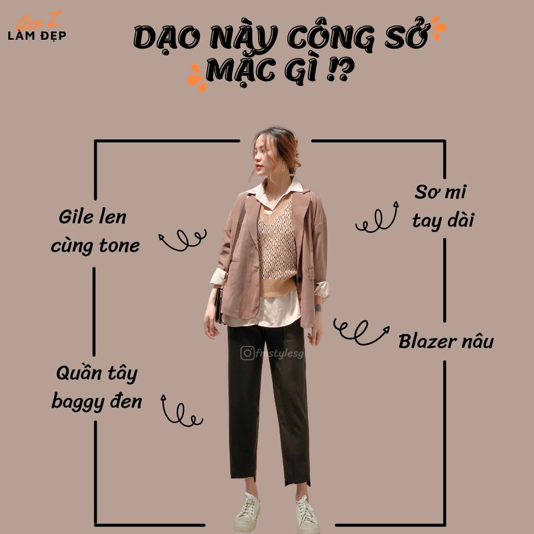
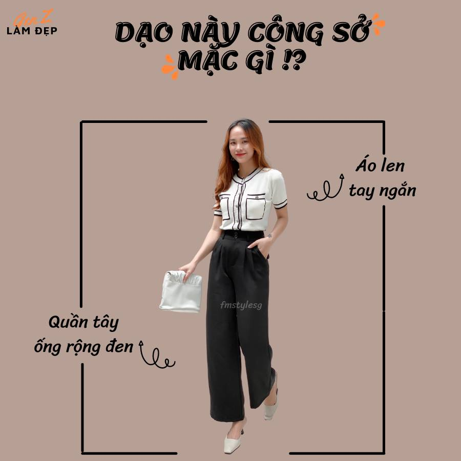
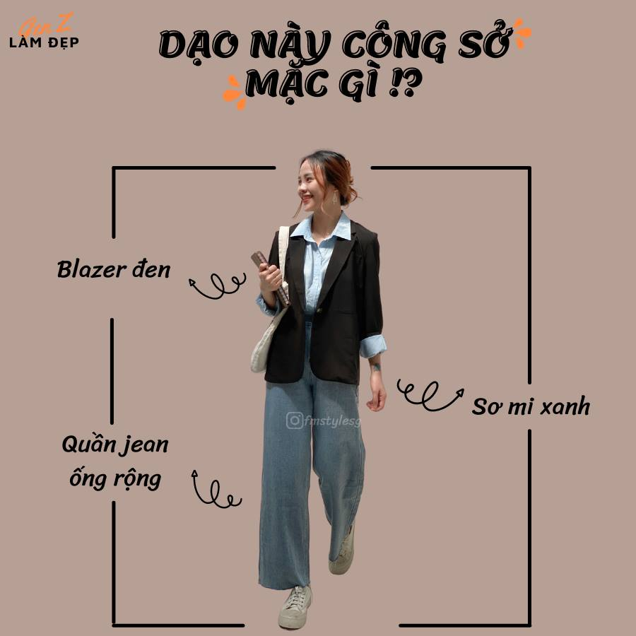
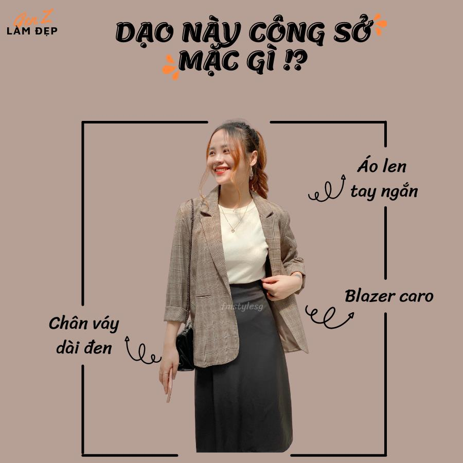

Công sở mặc gì?
Admin 20/04/2021
Con gái rất đặc biệt về cách ăn mặc, trang phục mặc thường ngày có thể là bình thường nhưng khi mặc đi làm công sở cũng có những hạn chế nhất định, nếu quá xuề xòa sẽ ảnh hưởng đến hình ảnh của cả tác phong làm việc. Trang phục phù hợp và đơn giản là rất có khí chất, trẻ trung và nữ tính.
Vậy để biết cách phối đồ đi làm công sở nữ trẻ trung hơn mà vẫn tỏ ra sự chuyên nghiệp, phù hợp với công việc thì bạn hãy ghim ngay 5 tips "Công sở mặc gì ?" dưới đây nhé!
1.Quần tây + áo sơmi
Một item vô cùng đơn giản phù hợp với mọi dáng người. Giúp bạn toát lên vẻ trang trọng và không kém phần nghiêm chỉnh
2. Quần tây + áo sơmi + khoác
Vẫn là quần tây + áo sơ mi nhưng khi kết hợp thêm một số phụ kiện khác sẽ giúp bạn trở thành cô nàng sành điệu hơn
3.Quần tây ống rộng + áo len
Khi diện quần tây ống rộng lưng với áo slen các nàng nên mang một đôi cao gót. Với cách kết hợp này, hiệu quả hack dáng của set đồ lại càng được tăng cao. Ngoài ra, nếu các nàng có phong cách cá tính năng động thì có thể diện một đôi giày thể thao. Đây sẽ là phụ kiện giúp set đồ trở nên phá cách và thêm phần thu hút đấy!
4. Quần jean ống rộng + áo sơ mi + khoác ngoài
Nhắc tới quần jean thì chắc hẳn không chị em nào không có trong tủ đồ của mình. Kết hợp với các item trên sẽ làm bạn trông vừa năng động vừa nghiêm chỉnh đấy
5. Chân váy + áo sơ mi + khoác ngoài
Chân váy là 1 món đồ không thể thiếu cho các nàng. Khi kết hợp với áo khoác và sơ mi thì bạn đã có cho mình 1 set đồ công sở vô cùng xinh xẻo và cũng không kém phần quyến rũ.